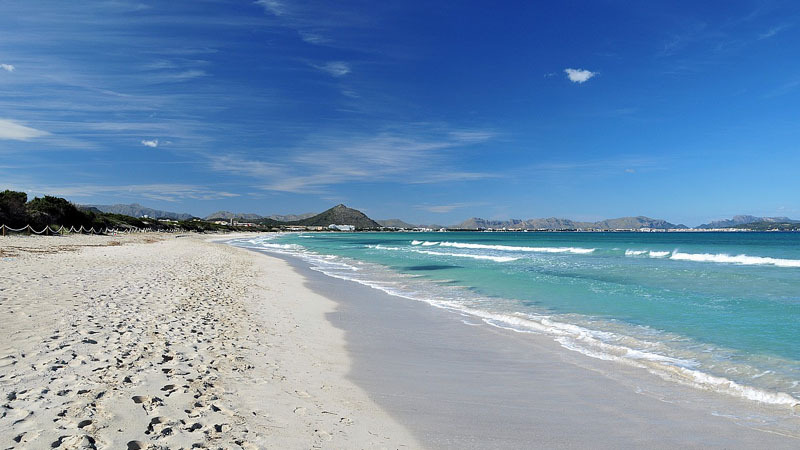
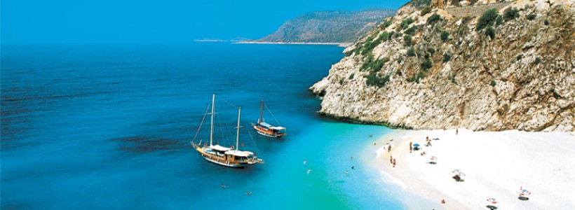
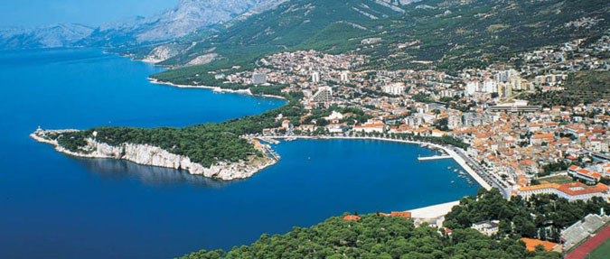
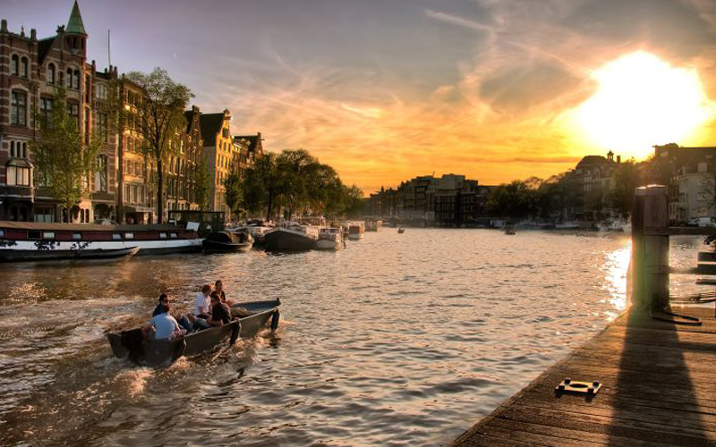
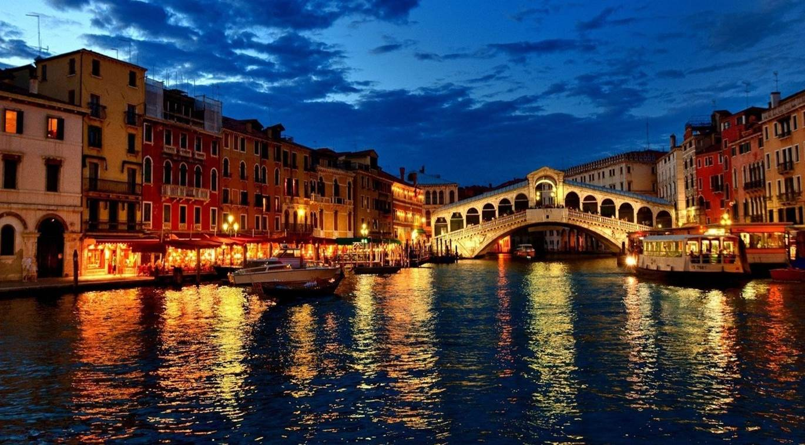

Ljeto 2016!
Španija – Costa Brava
ETF-Trans vodi vas na ljetovanje u Španiju: 11 dana / hoteli 3*
Španija – ako zatvorimo oči i prenesemo se na trenutak na Pirinejsko poluostrvo, čut ćemo zvuk kastanjeta i gitare, vidjet ćemo izuzetne igračice koje se pokreću u ritmu flamenka, osjetit ćemo miris mediteranske kuhinje i Sangrije... Naravno, tu je i eho talasa Sredozemnog mora, sjaj sunca i toplota pjeska pod nogama...
Costa Brava (Divlja obala), se prostire na 200 km, sjeverno od Barcelone prema francuskoj granici. Njena priroda, klima i historijsko nasljeđe, uz prelijepu obalu koju zapljuskuje moćni Mediteran, čine je jednom od najatraktivnijih ljetovališta u Evropi.
Ljetovalište Lloret de Mar, "Cvijet na moru" ili "grad lovora" (od latinskog lauretum), jedno je od najposjećenijih u Španiji. U ovom dijelu Costa Brave svoj odmor provodi više od 200.000 turista iz cijelog svijeta: Britanci, Francuzi, Njemci… Vikendom se broj turista udvostručuje jer je Lloret de Mar poznat, kao grad u kojem vrije od noćnog života. Ako na sve ovo dodamo i bogato kulturno historijsko naslijeđe, kada otvorimo oči poželjet ćemo da se i u stvarnosti preselimo upravo u ovu zemlju.
Antalija - Turska
ETF-Trans vodi vas na ljetovanje u Antaliju: 15 dana / hoteli 4*
Antalija, jedna od najstarijih turističkih regija u Turskoj, obećano je mesto od pamtiveka. Od nekadašnje Ateleie, prkoseći uticajima brojnih civilizacija,izrasla je u prestižnu evropsku turističku destinaciju. Oko 300 sunčanih dana i izuzetno blaga klima čine je magnetno privlačnom. Turistička naselja, Kemer na zapadu i Belek na istoku, Antalijskoj regiji s prekrasnim plažama i veličanstvenom planinom Taurus u zaleđu, uz neizbežne mirise bajkovitog istoka daruju i sva uzbuđenja savremenog življenja u danima odmora. Lepote Antalije su i danas vidljivi tragovi brojnih civilizacija, kao i veličanstveno susretanje prošlog i ovovremenskog. U starom delu grada su uske krivudave ulice sa starim kućama koje se naslanjaju na zidine drevne tvrđave. Novi delovi Antalije nalik su savremnim evropskim gadovima...Tu su naravno i brojni hoteli, uglavnom izvan grada i nadomak prelepih plaža...
Makarska - Hrvatska
ETF-Trans vodi vas na ljetovanje u Makarsku: 10 dana
Makarska je jedno od najpoznatijih turističkih odredišta hrvatskog priobalja, privlačno zbog svojih i prirodnih i klimatskih karakteristika, raznolike turističke ponude i gostoljubivih domaćina.
Pješčana i šljunčana plaža, duga je skoro 2 km i po njoj je bila, a i danas je prepoznatljiva. Uza šetnice obrubljene borovima nalaze se različiti turistički sadržaji, udobni hoteli, ugostiteljski objekti s gastronomskim specijalitetima, te obilje zabave za djecu i odrasle.
Makarska se nalazi u podnožju planinskog masiva Biokova (1762 m), koji štiti od prodora kontinentalne klime te ima bujnu mediteransku vegetaciju, blagu zimu, duga i topla ljeta s osvježavajućim maestralom.
Sunce je obasjava više od 2750 sati godišnje s temperaturom zraka višom od 20°C od lipnja do rujna, a prozirno more od lipnja do listopada ima temperaturu iznad 20°C.
Cijena od 27.08. – 03.09.2016 - 61 KM, a od 03.09.2016 57KM po danu I osobi. Doručak – buffet I večera izbor 3 jela , sok ili aperitiv ( salata I supa – samoposluživanje)
Popusti: Dijete do 3 god.GRATIS; Djeca do 12 godina sa 2 odrasle u sobi 50%popusta; Dvoje djece do 12 godina sa 1 odraslom 50%.
U periodu od 03.09.2016 dijete do 12 god. sa 2 odraslih GRATIS. Nadoplata za 1/1 sobu +30%. Treća odrasla osoba na upit!!
Putovanja 2016!
Putovanje u Amsterdam
ETF-Trans vodi vas u Amsterdam: 4 dana
Amsterdam je grad bogate historije. U 17. stoljeću ovaj grad je bio trgovačka prijestolnica svijeta. Period od 1585-1672. s pravom se naziva Zlatnim dobom Amsterdama i u isto vreme zlatnim dobom holandske kulture, posebno slikarstva. Iako se Parlament i glavne institucije države nalaze u Hagu, Amsterdam je zvanično glavni grad Holandije.
Amsterdam je takođe i najveći grad Holandije sa populacijom od skoro 750 000 stanovnika a takodje i najposjećeniji grad, sa više od 3,5 miliona turista godišnje. Uvjerite se zašto! Amsterdam, grad koji je dobio ime po rijeci Amstel, leži na više od 150 kanala koji su povezani s gotovo 1300 mostova, pa ga mnogi često uspoređuju s Venecijom. I u pravu su. Zato je Amsterdam najljepše razgledati s nekog od turističkih brodova, koji će vas provesti kroz tri glavna kanala, Herengracht, Keizersgracht i Prinsengracht, i gdje ćete imati priliku upoznati prepoznatljivu nizozemsku arhitekturu i njihove kuće od cigli.
Tu ćete vidjeti i Blauwbrug, najljepši most, Munttoren i Montelbaanstoren, najpoznatije tornjeve, ali i na stotine brodova-kuća, od kojih su mnogi preuređeni u turistički smještaj.Kopneni dio grada je najbolje obići pješice ili se pridružiti lokalnom stanovništvu na biciklima, kojih je ovdje registrirano više od 600 hiljada!
Glavni trg zove se Dam i s njega se možete orijentirati prema svim drugim odredištima. Na Damu se nalazi Kraljevska palača, Koninklijk Paleis, koja je nekada bila gradska vijećnica. Tu je i krunidbena crkva nizozemske aristokracije, Nieuwe Kerk, ali i poznati muzej voštanih figura Madame Tussauds. U blizini je i glavna željeznička stanica, Centraal Station, te brojne zanimljive crkve poput Sint Nicolaaskerk, Westerkerk i Zuiderkerk. Zidine staroga grada 'predstavlja' Waag, jedina preostala njegova utvrda, koja će mnogima biti zanimljiva po tome što tu započinje Walletjes, najpoznatija crvena četvrt. Amsterdam je u cijelom svijetu poznat po visokom stepenu tolerancije i međukulturalnom razumijevanju, što još više pridonosi njegovoj privlačnosti. No, Amsterdam ima još puno toga za pružiti. Jeste li znali da je ovdje najviše muzeja po kvadratnom metru na svijetu? Počevši od onih 'klasičnih' kao što su Rijksmuseum, Van Gogh Museum i Museum het Rembrandthuis, pa do 'unikatnih' kao što su kuća Anne Frank, Heineken Experience, Muzej dijamanata ili Muzej erotike.
I jeste li znali da je početkom 17. vijeka ovdje osnovana prva burza na svijetu? To je bilo 'zlatno doba' grada, kad se i današnji New York zvao New Amsterdam! Ovdje ćete vidjeti i brojne parkove, od kojih je najpoznatiji i najljepši Vondelpark i oko kojeg ćete pronaći najbolji smještaj u gradu. O restoranima i kuhinji da ne govorimo, tako da uz domaću, probajte i surinamsku ili indonezijsku hranu. Mnoge od njih ćete naći u Albert Cuypstraat ili okolo Damraka, u čijoj se blizini nalazi i jedina tržnica cvijeća na plutajućim kućama-brodovima. Kao i u svakoj metropoli i ovdje možete obaviti kvalitetan shopping, koji je najbolji u Nieuwedijk-Kalverstraat ili P.C. Hooftstraat. Izlasci su priča za sebe. Više od 1500 klubova i barova, kojih najviše ima na Leidseplein, Rembrandtplein i oko Jordaana
Putovanje u London

ETF-Trans vodi vas u London..
O Londonu ste sigurno čuli mnogo priča. Kako su tu bili Kelti, pa su ih protjerali Rimljani, pa su onda i Rimljani protjerani, a London je ostao sam i slobodan da se brine o sebi. I kako je tu živjela čuvena londonska magla pa su i nju protjerali.
Dobro su Vam poznate slike zgrade britanskog parlamenta i obale Temze, Buckingham Palace, London Bridge, Tower of London, Piccadilly Circus, Hyde i ostali glasoviti parkovi. Chelsea je mjesto gdje se rodio punk, Westminster središte političkog života, Covent Garden je idealan za razonodu po radnjama i pabovima.
Grad ima toliko pozorišta, kina, sportskih stadiona u kome se svaku večer održavaju koncerti svih vrsta muzike, s toliko diskoteka i klubova i daje priliku svakome da se dobro zabavlja.
London će Vam već prvog dana potpuno ispreturati misli, pomiješati osjećaje, oboriti Vas s nogu, pa ćete do posljednjeg dana svog boravka maštati o tome da Vam odgode let bar za jedan dan ili da se iz nepoznatih razloga prekinu veze s Europom pa da ostanete barem malo duže.
Putovanje u Veneciju
ETF-Trans vodi vas u Veneciju..
Venecija se nalazi na sjevernoj obali Jadranskoga mora. Umjesto ulica grad presijeca 150 kanala preko kojih je izgrađeno mnoštvo malih mostova. Saobraćaj obavljaju brodovi, čamci i gondole. Najveći kanal je Kanal Grande, koji prolazi sredinom grada, a na njemu se nalazi Ponte Rialto, most koji predstavlja najvažniju spojnicu dva velika dijela grada. U centru grada je Markov trg sa starom crkvom Sv. Marka i sa veličanstvenom Duždevom palatom. Venecija je 3600 m dugim mostom spojena sa kopnom, gdje su se razvila velika predgrađa Mestre i Margera. Veneciju godišnje posjećuju milioni turista. U njoj se svake godine održava filmski festival, a poznata je i po proizvodnji stakla, čipke, predmeta od zlata, srebra i kože.
Klasični venecijanski brod je gondola, koja se najčesće koristi za prijevoz turista, ili za vjenčanja, sahrane i druge obrede. Većina Venecijanaca putuju brodovima koji se koriste u svrhu javnog prijevoza, zvani vaporetto, koji funkcioniraju kao zamjena za autobuse. Vaporreto vrši redovite rute duž glavnih kanala i između različitih otoka. U gradu ima mnogo privatnih brodova. Prijevoz gondolama naplaćuje se na križanjima kanala, i to na mjestima gdje nema mostova.